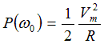
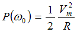

Vs(t) = Vm ∠θ
Input impedance:

Resonant frequency:

The highest power:

Half-power frequencies (ω1, ω2):
Half-power bandwidth (B):
B = ω2 - ω1
Q = 2 π (Peak energy stored)/(Energy dissipated in one period at resonance)
Change in L,
Change in C,
|
Voltage source: Vs(t) = Vm ∠θ Input impedance: Resonant frequency: |
|
|
Frequency response of current magnitude: The highest power:  Half-power frequencies (ω1, ω2): Half-power bandwidth (B): B = ω2 - ω1 |
|
|
Quality factor (Q): Q = 2 π (Peak energy stored)/(Energy dissipated in one period at resonance) |
Change in R, Change in L, Change in C, |